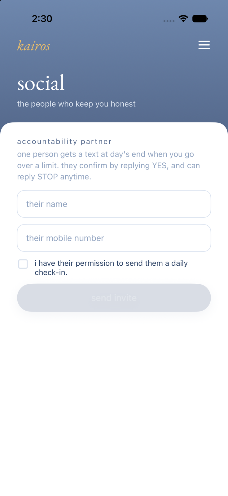

Kairos — Accountability Text Messages
Kairos is a personal screen-time iOS app operated by Alexander Spiridellis (Sole Proprietor). This page documents our accountability-partner SMS program, the exact call to action where opt-in begins, and the consent flow. The in-app screen shown below is the only opt-in path — there is no web signup form.
The call to action (in-app screen)
Inside the Kairos iOS app, a user invites one accountability partner — someone they personally know — on this screen:

What the screen requires, exactly as shown:
- The disclosure displayed above the form: "one person gets a text at day's end when you go over a limit. they confirm by replying YES, and can reply STOP anytime."
- A consent checkbox — unchecked by default — reading: "i have their permission to send them a daily check-in." The send invite button stays disabled until it is actively checked.
The two-step confirmation (recipient consent)
- After the user submits the form above, the recipient receives one confirmation text:
kairos: [name] added you as their accountability partner. reply YES to start getting their daily check-in, STOP to decline.
- No further messages are sent unless the recipient replies YES. The YES reply is stored as the recipient's express consent. On YES they receive:
kairos: you're all set as an accountability partner. expect one check-in a day. reply HELP for help, STOP to opt out. msg & data rates may apply.
What opted-in recipients receive
kairos: [name] today went over their limits: instagram (2h) · tiktok (1h). reply STOP to opt out.
Personal accountability notifications only. No marketing, promotional, or third-party content, ever.
Frequency, opt-out, help, rates
Up to one message per day, only on days a limit is exceeded. Reply STOP at any time to stop all messages, START to resubscribe, or HELP for help (support: alex@spiridellis.com). Message and data rates may apply.
Privacy & terms
Phone numbers are never shared with third parties other than our SMS delivery provider (Twilio). See our
Privacy Policy and
Terms of Service.